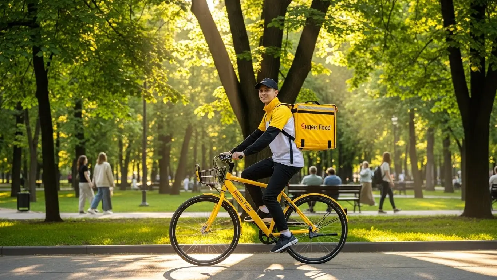
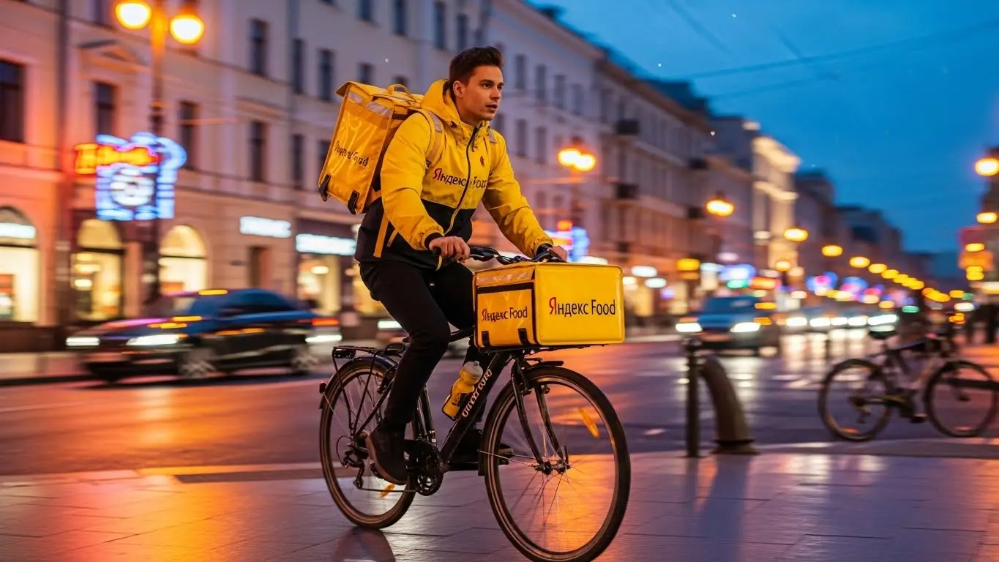

Работа курьером Яндекс Еда в Химках в 2025-2026: доход и условия
- Работа курьером Яндекс Еды в Химках: для кого эта вакансия и что вы получите
- Сколько вы будете зарабатывать курьером в Химках: калькулятор дохода и разбор выплат
- Реальный заработок курьера в Химках: смены и месячный доход
- График работы и форматы занятости
- Требования к кандидату и документы
- Самозанятость, налоги и юридическая чистота
- Пошаговое оформление и первый выход на линию в Химках
- Пешком, на вело или на авто: что выгоднее в Химках
- Районы, маршруты и «топовые» зоны заказов в Химках
- Безопасность, страховка, штрафы и оплата простоя
- Плюсы и возможные минусы работы курьером в Химках
- Реальные истории и отзывы курьеров из Химок
- Ответы на главные вопросы о работе курьером Яндекс Еды в Химках
- Короткие ответы на главные вопросы
- Итоги и ваш следующий шаг
Все города
Здорово, будущий коллега! Раздумываешь, стоит ли крутить педали или жечь бензин в доставке по Химкам? Боишься, что убьёшь велик на наших бордюрах, застрянешь в вечной пробке на Юбилейном или будешь зарабатывать копейки после вычета всех комиссий? Давай начистоту: работа курьером в сервисах Яндекса — Еде, Лавке или Доставке — это не просто «взял заказ и поехал». Это своя игра со своими правилами, особенно в нашем городе с его рельефом, трафиком и контрастными районами.
Чтобы через месяц не проклинать всё на свете и не забросить жёлтый термокороб в угол, нужно понимать местную кухню изнутри. Реальный доход — это не рекламные цифры, а то, что останется в кармане после расходов на транспорт, уплаты налога и учёта твоего рейтинга в системе. Я видел десятки новичков, которые теряли деньги, пытаясь прорваться из Старых Химок в Новые в час пик или часами ожидая заказов в «мёртвых» зонах. Просто потому что никто им не объяснил, как тут всё устроено на самом деле. Кстати, если вы ищете краткую сводку и форму для быстрой заявки, то вся информация про работу курьером Яндекс Еда в Химках собрана на специальной странице.
Здесь мы без воды разберём всё, что тебе нужно знать про работу курьером в Химках на 2025-2026 год. Я покажу на реальных примерах, на чём выгоднее работать — на авто, велосипеде или своих двоих. Мы честно посчитаем, сколько чистыми можно положить в карман за смену в разное время года. Расскажу, где ловить «жирные» заказы, как погода и пробки у «Меги» влияют на заработок, за что реально штрафуют и как этого избежать. Считай, это твой личный гид по курьерским джунглям Химок.
Меня зовут Алексей. Я сам откатал не одну тысячу километров по Химкам с жёлтой сумкой, а сейчас у меня свой небольшой таксопарк-партнёр, так что знаю эту систему и с руля велосипеда, и со стороны цифр в отчётах. Никакой рекламной шелухи, только мясо и реальный опыт, который сэкономит тебе кучу нервов и денег. В общем, садись поудобнее, сейчас всё разложу по полочкам.
Прежде чем нырять в детали, давай быстро пробежимся по главным темам. Это поможет сориентироваться, о чём пойдёт речь дальше.
Что ты точно узнаешь из этого разбора
В этой статье ты ТОЧНО узнаешь:
- Сколько реально можно заработать в Химках за смену и за месяц, если работать на авто, велосипеде или пешком?
- В каких районах Химок (Старые, Новые, Левый берег) больше всего заказов и выше коэффициенты?
- За что на самом деле снижают рейтинг и как избежать блокировки в системе?
- Что выгоднее для работы в Химках — свой автомобиль, велосипед или ноги, и какие у каждого формата есть подводные камни?
- Как правильно оформить самозанятость за 10 минут и сколько налогов придётся платить с дохода?
- Что такое «оплата простоя» и как она защищает твой доход, если заказов в смене оказалось мало?
А если тебе некогда читать всю статью — переходи сразу к заключению, где ты найдёшь короткие ответы на все эти вопросы и указания, в каких разделах искать подробности.
А вот наглядная инфографика, чтобы сразу увидеть ключевые цифры по работе в Химках.
Работа курьером в Химках: ключевые цифры
Работа курьером Яндекс Еды в Химках: для кого эта вакансия и что вы получите
Кому подойдёт эта работа в Химках
Давай начистоту: эта работа не для всех, но для многих она — настоящая находка. В первую очередь, это идеальная подработка для студентов. График можно подстроить под учёбу, выходить на пару часов после пар и иметь свои деньги на расходы. Во-вторых, это отличный старт для тех, у кого нет опыта. Здесь не требуют диплом или резюме на пять страниц — это отличная работа без опыта. Главное — твоя ответственность и желание двигаться.
Также это прекрасная возможность для тех, у кого уже есть основная работа. Можешь выходить на смены по вечерам или в выходные, чтобы закрыть кредит или накопить на отпуск. Ну и, конечно, это вакансия для водителей, которые хотят использовать свой автомобиль по максимуму. Если тебе важен свободный график, ежедневные выплаты и понятные условия — эта вакансия курьера в Химках точно для тебя.
Главные преимущества для жителей районов Старые Химки, Новые Химки, Левобережный
Главный кайф работы в Химках — возможность доставлять заказы буквально в соседнем дворе. Тебе не нужно тратить по полтора часа на дорогу до «офиса». Живёшь в Новых Химках — вышел из подъезда, включил приложение «Яндекс Про» и уже на смене. Через него приходят заказы не только из ресторанов Яндекс Еды, но и из Яндекс Лавки, так что работы хватает, особенно в районе улицы Дружбы и Юбилейного проспекта.
То же самое касается и Старых Химок. Там полно кафе и ресторанов, особенно в районе станции, так что пешему курьеру всегда есть чем заняться. А если ты живёшь в Левобережном, то можешь обслуживать свой район, не пересекая Ленинградку и не стоя в вечных пробках. Это экономит не только время, но и нервы, а твой заработок идёт на пользу, а не на оплату проезда через весь город.
Краткое обещание по доходу и условиям
Если говорить о зарплате, то цифры в Химках вполне достойные. При частичной занятости, работая по 4–5 часов в день, можно спокойно делать 2000–2500 рублей. Если же выходить на полную смену (8–10 часов), то реальный доход курьера на автомобиле может достигать 4500–5500 рублей и выше. В месяц при полной занятости курьеры, работающие как самозанятые или через партнёра, зарабатывают от 70 000 до 110 000 рублей.
С условиями всё просто и честно. Ты сам выбираешь, когда работать — хоть два часа в день, хоть двенадцать. Ключевое преимущество — ежедневные выплаты: деньги приходят на карту, не нужно ждать конца месяца. И самое главное — начать можно без опыта. Пройдёшь короткое онлайн-обучение, получишь фирменный термокороб и можешь выходить на линию.
Сколько вы будете зарабатывать курьером в Химках: калькулятор дохода и разбор выплат
Из чего складывается доход курьера
Твой заработок курьера — это не просто ставка за час. Доход складывается из нескольких частей, как конструктор. Во-первых, есть базовая оплата за каждый выполненный заказ. Во-вторых, к ней добавляется доплата за расстояние — чем дальше везти, тем больше денег. В-третьих, в часы пик (обед, ужин, выходные) и в плохую погоду включаются повышающие коэффициенты. Карта в приложении «Яндекс Про» окрашивается в яркие цвета, и в этих зонах за тот же самый заказ можно получить в 1.5–2 раза больше.
Кроме этого, есть персональные бонусы за выполнение определённого количества заказов в день или неделю. Не стоит забывать и про чаевые — благодарные клиенты часто оставляют их прямо в приложении, и вся эта сумма идёт тебе в карман. И два важных момента: сервис гарантирует оплату простоя, если ты приехал в ресторан, а заказ ещё не готов, а также может компенсировать проезд на общественном транспорте, если доставка очень дальняя.
Как пользоваться калькулятором дохода
Чтобы прикинуть свой возможный заработок, не нужно гадать на кофейной гуще. На сайте есть специальный калькулятор дохода. Пользоваться им элементарно. Сначала выбираешь свой город — Химки. Затем указываешь, как планируешь доставлять: пешком, на велосипеде или на своём авто.
Дальше двигаешь ползунки: сколько часов в день и сколько дней в неделю ты готов работать. Например, 4 часа в день 5 дней в неделю. Калькулятор мгновенно обработает эти данные и покажет тебе примерный диапазон твоего дохода за день и за месяц. Это, конечно, не стопроцентная гарантия, но цифры даются на основе реальной статистики по городу и помогают сориентироваться, на что можно рассчитывать.
Калькулятор дохода курьера в Химках
8 часов
5 дней
*Расчёт основан на средней ставке для Химок. Реальный доход зависит от спроса, бонусов, чаевых и вашего рейтинга.
Чтобы увидеть более точные цифры и сразу подать заявку, можешь воспользоваться формой на официальной странице — там же найдёшь подробные условия и ответы на вопросы про работу курьером Яндекс Еда в твоём городе.
Примеры расчёта для пешего, вело- и авто‑курьера в Химках
Чтобы было понятнее, давай разберём на живых примерах.
- Пеший курьер. Парень работает в Старых Химках, в районе улиц Московская и Маяковского. Там много кафе и плотная застройка. Он выходит на 6 часов в день, захватывая обеденный и вечерний пик. За счёт коротких расстояний и большого количества заказов он делает примерно 15–18 доставок за смену. Его средний доход — 2800–3300 рублей в день.
- Велокурьер. Студентка катает на велосипеде по Новым Химкам, между Юбилейным проспектом и районом ТЦ «Мега». Велосипед позволяет ей быстро перемещаться между кварталами, игнорируя пробки. Работая по 8 часов в выходные, она спокойно зарабатывает 3500–4500 рублей за смену.
- Курьер на автомобиле. Мужчина работает на своем авто и берёт заказы по всему городу, включая дальние доставки в Куркино, Новогорск и на Левый берег. Он предпочитает работать в плохую погоду, когда коэффициенты максимальные. За полную 10-часовую смену в дождливый день его заработок может составить 6000–7500 рублей. После вычета расходов на бензин чистыми остаётся очень приличная сумма.
Вот как это работает. Например, один из водителей-курьеров в прошлую субботу, когда лил дождь, вышел на линию в районе ТЦ «Мега Химки». Коэффициент был х1.7. Он целенаправленно брал только дальние заказы в новые ЖК на Левом берегу. За 9 часов работы он сделал 7200 рублей «грязными». На бензин ушло около 900 рублей. Итог — больше 6000 рублей чистого дохода за один день. Главное — ловить момент.
В общем, твой итоговый доход в Химках напрямую зависит от выбранного транспорта, района и времени работы. Чтобы зарабатывать больше, не ленись выходить в пиковые часы и следи за «горящими» зонами в приложении Яндекс Про.
Реальный заработок курьера в Химках: смены и месячный доход
Давай сразу к главному — к деньгам. В Химках, как и в других городах, твой заработок в Яндекс Еде и Доставке зависит от того, как ты работаешь: на своих двоих, на велосипеде или на машине, и сколько времени этому уделяешь. Цифры в рекламе — это одно, а реальный доход — совсем другое, и я расскажу, на что можно рассчитывать по факту.
Здесь нет фиксированной зарплаты, твой доход — это сумма выполненных заказов, бонусов и чаевых, а выплаты можно получать хоть каждый день. Поэтому один день может быть густо, а другой — пусто. Но если подходить с умом, то стабильный заработок вполне реален. Главное — понять, где, когда и на чём выгоднее всего работать именно в наших химкинских реалиях.

Диапазон дохода для подработки и полной занятости
Если ты ищешь подработку на 2–4 часа в день, например, после основной работы или учёбы, то цифры будут примерно такие. Пеший курьер в Химках за короткую смену может сделать 800–1500 рублей. Велокурьер за то же время заработает больше, около 1200–2000 рублей, потому что успевает выполнить больше заказов. Автокурьер на подработке, особенно если берёт вечерние часы пик, может рассчитывать на 1500–2500 рублей. В месяц при таком графике (5 дней в неделю) выходит 25–45 тысяч рублей — неплохая прибавка к основному доходу.
При полной занятости, то есть на сменах по 8–10 часов, доход совсем другой. У пешего курьера, который работает полный день, заработок может составлять 2500–3500 рублей в смену, что в месяц выливается в 50–70 тысяч. Велокурьер при полной загрузке делает 3000–4500 рублей в день, то есть 65–90 тысяч в месяц.
Самый высокий доход, конечно, у водителей-курьеров: 4000–6000 рублей за смену — это норма. В месяц у них выходит от 80 до 120 тысяч рублей грязными, из которых нужно вычесть расходы на бензин и обслуживание машины.
Как район, время суток и погода влияют на доход
Твой заработок — это не просто ставка за заказ. Он постоянно меняется в зависимости от спроса. Когда заказов много, а курьеров на линии мало, включаются повышающие коэффициенты. В Химках самые «жирные» часы — это обеденный пик с 12:00 до 15:00 и вечерний с 18:00 до 21:00. В это время все хотят есть, поэтому заказов из ресторанов в районах вроде Новых Химок или около ТЦ «Мега» становится в разы больше. Выходные, особенно вечера пятницы и субботы, — это тоже золотое время.
Погода — твой лучший друг в плане заработка. Как только начинается дождь, снегопад или сильная жара, большинство людей предпочитают сидеть дома и заказывать доставку. Коэффициенты в приложении сразу взлетают, карта «фиолетовеет», а твой термокороб становится особенно востребованным. К тому же, в плохую погоду клиенты чаще оставляют хорошие чаевые, потому что ценят твой труд.
Районы тоже играют роль: в густонаселённых спальниках (Новокуркино, Левобережный) всегда есть спрос на доставку из магазинов, а в Старых Химках и у бизнес-центров на Ленинградском шоссе — на еду из кафе.
Советы по увеличению заработка от опытных курьеров
Чтобы зарабатывать больше, не обязательно работать сутками. Вот несколько проверенных советов. Во-первых, всегда планируй смены заранее и старайся брать слоты в пиковые часы — вечера и выходные. Во-вторых, изучи карту спроса в приложении «Яндекс Про». Не сиди в «мёртвой» зоне, двигайся туда, где горит высокий коэффициент. Для Химок это часто зоны вокруг ТЦ «Мега» и «Лига», а также улица Молодежная, где много заведений.
Если ты водитель-курьер, не бойся брать дальние заказы в Куркино или даже в Сходню — они оплачиваются значительно выше. Велокурьерам выгодно работать в Новых Химках, где много многоэтажек и небольшие расстояния между адресами. Пешему курьеру лучше держаться центра Старых Химок, где всё компактно. И главный совет: будь вежлив с клиентами. Хорошее отношение часто конвертируется в чаевые, которые за месяц могут составить ощутимую часть твоего дохода.
Вот недавний пример из практики. Парень-студент на велосипеде решил поработать в пятницу вечером, когда лил дождь. Он специально выбрал зону в Новых Химках. Коэффициент был х1.8, плюс почти каждый второй клиент накидывал чаевые. За 4 часа он сделал почти 3000 рублей, хотя в обычный день за то же время у него выходило 1500–1800.
В итоге, твой реальный заработок в Химках — это сумма твоей мобильности, знания города и умения ловить моменты высокого спроса. Не ленись изучать карту в приложении и выходить на линию, когда другие отдыхают. Именно так можно зарабатывать хорошие деньги, а не просто считать копейки от заказа к заказу.
График работы и форматы занятости
Одно из главных преимуществ этой работы — гибкость и свободный график. Ты сам решаешь, когда и сколько работать. Никто не стоит над душой с восьми до пяти. Это идеальный вариант для тех, кто хочет совмещать доставку с учёбой, основной работой или просто ценит свободу. Можно выходить на пару часов в день, а можно работать полную неделю — всё зависит от твоих целей и возможностей.
Приложение «Яндекс Про» позволяет тебе быть самому себе начальником. Ты работаешь как самозанятый или через партнёра, видишь доступные слоты (заранее запланированные смены) или можешь просто выйти на линию в свободном режиме. Такая система позволяет легко встроить подработку в любой график и получать за это ежедневные выплаты.

Подработка после учёбы или основной работы
Совмещать доставку с другой деятельностью проще простого. Вот пара реальных сценариев из Химок. Первый — студент местного техникума. Он живёт в Старых Химках, и после пар, примерно с 17:00, выходит на 3-4 часа на велосипеде. Катается по своему району, развозит ужины из кафе-партнёров Яндекс Еды на улице Чапаева и заказы из ближайших магазинов. В среднем за вечер у него выходит 1500-2000 рублей. В месяц набегает около 30-35 тысяч, что для студента отличные деньги.
Второй пример — менеджер, который работает в офисе в Новокуркино. У него есть машина. Чтобы быстрее закрыть кредит, он три-четыре раза в неделю после работы и на выходных выходит на линию на 4-5 часов. Берёт крупные заказы из гипермаркетов в «Меге», развозит их по всему району и в соседние. За счёт объёма и дальности заказов он добавляет к своей зарплате 25-40 тысяч рублей в месяц, не сильно напрягаясь. И тот, и другой пример показывают, что подработка курьером — это не миф, а реальный способ увеличить свой доход.
Полная занятость: как выглядит типичный день курьера
Если ты решил сделать доставку своей основной работой, твой день будет выглядеть более структурированно. Типичный день автокурьера в Химках начинается около 10-11 утра. Он выходит на линию и сначала выполняет заказы из «Яндекс Лавки» или «Маркета» по спальным районам, например, в Левобережном. К 12 часам дня он смещается ближе к центру или к ТЦ, где начинается обеденный пик заказов из ресторанов.
С 15:00 до 17:00 обычно бывает затишье. Это время можно использовать для обеда, отдыха или решения личных дел. А с 18:00 начинается вечерний пик, который длится до 21-22 часов. В это время курьер снова активно работает, развозя ужины. За день он может выполнить 10-15 заказов, а то и больше, если повезёт с короткими маршрутами. День заканчивается, когда курьер сам решает выключить приложение, получив на баланс заработанные за смену деньги.
Как планировать слоты и выходы через приложение «Яндекс Про»
«Яндекс Про» — твой главный рабочий инструмент. В нём ты не только получаешь заказы, но и планируешь свой график. В разделе «Расписание» можно выбрать плановые слоты. Это отрезки времени (от 2 до 12 часов), которые ты бронируешь заранее в определённой зоне города. Плюс плановых слотов в том, что у тебя будет приоритет в получении заказов, а в некоторых случаях — гарантированная минимальная оплата в час, даже если заказов будет мало.
Чтобы эффективно планировать, смотри на карту спроса. Зоны, подсвеченные фиолетовым, означают высокий спрос и повышенные коэффициенты. Старайся бронировать слоты именно там и в пиковое время. Очень важно не опаздывать на начало слота, так как это влияет на твой рейтинг и активность. Чем выше эти показатели, тем больше хороших заказов тебе будет предлагать система. Поэтому относись к планированию серьёзно — это напрямую влияет на твой стабильный доход.
Недавно один из моих водителей, который работает полный день, поделился своей стратегией. Он заранее на неделю вперёд бронирует вечерние слоты с 18:00 до 23:00 в Новых Химках, потому что знает, что там всегда есть спрос. А днём работает в свободном режиме, перемещаясь по городу в зависимости от того, где выше коэффициенты. Такой смешанный подход позволяет ему и иметь стабильность от плановых слотов, и ловить выгодные заказы в свободном поиске.
В общем, график работы — это конструктор, который ты собираешь сам под свои нужды. Хочешь — работай по ночам, хочешь — только по выходным. Главное — использовать возможности приложения «Яндекс Про» для планирования, чтобы не просто кататься по городу, а делать это с максимальной финансовой отдачей.
Требования к кандидату и документы
Многих новичков пугает этап с документами и требованиями. Кажется, что сейчас начнётся бюрократия, как при устройстве на завод. На деле всё гораздо проще. Давай по порядку разберём, какие условия и требования существуют, чтобы начать работать курьером в Химках.
Возраст, гражданство и базовые условия
Начнём с основ. Главное требование — тебе должно быть 18 лет. Это стандарт для работы в статусе самозанятого. Однако, если ты моложе, не спеши закрывать страницу. Для пеших и велокурьеров есть возможность начать работать с 16 лет, но об этом расскажу чуть ниже. По гражданству всё просто: нужен паспорт РФ или страны из ЕАЭС (Беларусь, Казахстан, Армения, Кыргызстан).
Что касается физической формы и опыта работы — здесь всё лояльно. Никто не требует олимпийских рекордов или предыдущего стажа. Если ты пеший курьер, будь готов много ходить. Для велокурьера важна выносливость, чтобы крутить педали несколько часов подряд, особенно если попадётся заказ с Левобережного в Новые Химки. Для водителя-курьера главное — уверенное вождение и знание города. В целом, если у тебя нет серьёзных медицинских противопоказаний к физической активности, ты справишься.
Какие документы нужны для работы курьером
Чтобы не бегать в последний момент, собери пакет документов заранее. Список короткий, и почти всё у тебя уже есть под рукой.
Вот что тебе понадобится:
- Паспорт. Основной документ для подтверждения личности и заключения договора. Гражданам ЕАЭС также могут понадобиться документы, подтверждающие легальное пребывание в РФ.
- ИНН (Идентификационный номер налогоплательщика). Он нужен для регистрации в качестве самозанятого. Если ты не помнишь свой номер, его можно за пару минут бесплатно узнать на сайте ФНС.
- Банковская карта. Нужна личная карта любого российского банка, на которую будут приходить выплаты. Важно, чтобы карта была оформлена именно на твоё имя.
- Медицинская книжка. Требуется не всегда. В основном, если ты планируешь доставлять заказы из ресторанов, где строгие санитарные нормы. Если у тебя её нет, сервис подскажет, где её можно оформить. Для доставки посылок или товаров из магазинов она обычно не нужна.
Подготовь всё это, и процесс оформления пройдёт максимально быстро. Никаких трудовых книжек, справок с предыдущей работы и прочей макулатуры не потребуется.
Можно ли работать с 16 лет и какие есть альтернативы
А теперь ответ на самый частый вопрос от молодых ребят. Да, в Яндекс Еде можно работать курьером с 16 лет, но с некоторыми условиями. Во-первых, это касается только пеших и велокурьеров. Садиться за руль автомобиля можно только с 18 лет при наличии прав.
Во-вторых, для работы до 18 лет потребуется письменное согласие одного из родителей или опекуна. В-третьих, оформление идёт не напрямую как самозанятый, а через курьерскую службу-партнёра, которая берёт на себя все юридические тонкости. Также по закону у тебя будет сокращённый рабочий день и запрет на ночные смены. Это отличная и, главное, легальная подработка для студентов и школьников, чтобы заработать на свои цели, не дожидаясь совершеннолетия.
Кейс из практики: У меня в парке был парень, 17-летний студент из Химок. Хотел накопить на новый игровой ноутбук. Родители сначала были против, мол, «будешь по ночам шататься». Я с ними поговорил, объяснил, что для несовершеннолетних есть ограничения по времени смен, всё официально. Он получил их согласие, оформился через нас как партнёрский велокурьер. Начал катать по своему району, в основном в Новых Химках, после учёбы по 3-4 часа. За три месяца спокойно накопил нужную сумму, ещё и на апгрейд велосипеда хватило.
Краткий вывод: Требования к курьерам в Яндексе минимальны: базовый набор документов, возраст от 18 лет (или от 16 для пеших/вело с согласия родителей) и адекватная физическая форма. Главный совет: перед заполнением анкеты проверь, все ли документы у тебя на руках и в порядке, особенно ИНН. Это сэкономит тебе время и нервы на старте.
Самозанятость, налоги и юридическая чистота
Многих пугают слова «самозанятость» и «налоги». Кажется, что это сложно, муторно и связано с походами в налоговую. Забудь эти стереотипы. В случае с работой курьером всё устроено максимально просто и для людей. Давай разберёмся, почему это выгодно и как работает на самом деле.
Почему курьеры Яндекс Еды работают как самозанятые
Основной формат сотрудничества с Яндекс Едой — это партнёрство в статусе самозанятого (официально — «Налог на профессиональный доход» или НПД). Это не трудовой договор, где есть начальник и строгий график, а договор оказания услуг. Ты — независимый исполнитель, который сам решает, когда и сколько работать.
Вот главные плюсы такого формата:
- Это официально. Твой доход полностью «белый». Это значит, ты можешь без проблем взять кредит, подтвердить свой заработок для визы или для любых других целей.
- Простота. Никакой бухгалтерии, отчётов и деклараций. Всё взаимодействие с налоговой происходит автоматически через специальное приложение.
- Низкий налог. Ставка налога для самозанятых всего 6% с дохода, который ты получаешь от Яндекса. Это почти в два раза ниже, чем стандартный НДФЛ в 13%.
- Гибкость. Ты сам себе хозяин. Захотел — вышел на линию через приложение Яндекс Про, устал — ушёл отдыхать. Никаких заявлений на отпуск и отработок.
По сути, самозанятость — это самый простой и законный способ получать деньги от крупных компаний, оставаясь при этом свободным в своём графике.
Как за 10 минут оформить самозанятость через «Мой налог»
Регистрация статуса самозанятого занимает не больше времени, чем заказ пиццы. Никуда ходить не нужно, всё делается через смартфон.
Вот пошаговая инструкция:
- Скачай приложение. Найди в Google Play или App Store официальное приложение ФНС России — «Мой налог».
- Начни регистрацию. Открой приложение и выбери самый простой способ — «Регистрация по паспорту РФ».
- Отсканируй паспорт. Наведи камеру телефона на главный разворот паспорта. Приложение само распознает все данные.
- Сделай селфи. Дальше приложение попросит тебя сфотографироваться. Это нужно для подтверждения личности, чтобы никто не смог зарегистрироваться по твоему паспорту.
- Подтверди регистрацию. Проверь данные и нажми кнопку «Подтверждаю».
Вот и всё. Через несколько минут тебе придёт уведомление, что ты зарегистрирован в качестве плательщика налога на профессиональный доход. Весь процесс реально занимает 5–10 минут.
Сколько и как платить налоги
С налогами всё ещё проще, чем с регистрацией. Тебе не нужно ничего считать вручную. Яндекс по итогам каждой выплаты сам передаёт информацию о твоём доходе в налоговую.
Приложение «Мой налог» автоматически формирует чек и рассчитывает сумму налога по ставке 6%. Раз в месяц, до 12-го числа, тебе в приложение приходит уведомление с итоговой суммой за предыдущий месяц. Оплатить его нужно до 28-го числа. Сделать это можно прямо в приложении, привязав банковскую карту. Два нажатия — и налог уплачен.
Кроме того, каждому новому самозанятому государство даёт приветственный бонус — 10 000 рублей. Эти деньги нельзя снять, но они автоматически идут на уменьшение твоего налога. Пока бонус не исчерпается, твоя ставка будет не 6%, а 4%. Это приятная скидка на первое время. Работать так гораздо безопаснее, чем получать «серый» кэш и постоянно думать, не возникнут ли у налоговой к тебе вопросы.
Кейс из практики: Один из моих водителей, мужчина лет 35 из Старых Химок, долгое время подрабатывал частным извозом за наличку. Когда решил устроиться автокурьером, очень боялся этой «самозанятости». Думал, что это бумажная волокита. Я сел с ним рядом, и мы вместе скачали приложение «Мой налог». Он зарегистрировался буквально за 7 минут, пока ждал свой заказ в кафе. Через месяц, когда пришёл первый налог — около 1500 рублей, он оплатил его в два клика. Сказал, что даже не ожидал, что всё настолько автоматизировано. А через полгода этот официальный доход помог ему без проблем получить кредитную карту с хорошим лимитом.
Краткий вывод: Самозанятость — это не сложно и не страшно, а наоборот, очень удобно. Это легальный статус с низким налогом и полностью автоматизированной отчётностью. Мой совет: не ищи «серых» схем. Оформи самозанятость один раз, и ты получишь официальный доход, спокойствие и никаких проблем с законом. Это самый правильный путь для работы с крупным и надёжным партнёром.
Пошаговое оформление и первый выход на линию в Химках
Многие думают, что работа курьером в Яндекс Еде — это долгая история с бумажками и собеседованиями. На деле всё устроено так, чтобы ты мог начать зарабатывать максимально быстро, буквально за один день. Это отличный вариант для подработки без опыта. Весь процесс отлажен и проходит онлайн, без лишней бюрократии. Главное — твоё желание, паспорт и смартфон.
Шаг 1–2: анкета и онлайн‑обучение
Всё начинается с простой анкеты на сайте. Никаких вопросов про прошлые достижения или опыт работы. Нужно указать базовые данные: ФИО, телефон, город — Химки, гражданство. Обычно для работы требуется статус самозанятого, но его оформление занимает 10 минут прямо в приложении. Заполнение анкеты занимает от силы 10–15 минут. После быстрой проверки тебе на телефон приходит ссылка на приложение «Яндекс Про» и обучающие материалы.
Обучение — это не скучные лекции, а несколько коротких видео и небольшой тест. Там расскажут про главные условия работы: как пользоваться приложением, общаться с клиентами и что делать в нестандартных ситуациях. Цель теста — не завалить тебя, а убедиться, что ты понял основные правила сервиса и безопасности. Прошёл его — считай, полдела сделано.
Шаг 3: получение сумки и доступа к заказам в Химках
Следующий этап — получение главного рабочего инструмента, фирменной термосумки или термокороба. Без него система не даст доступ к заказам из ресторанов и магазинов, так как важно сохранять температуру блюд. В Химках получить экипировку можно несколькими способами: забрать в курьерском центре или у партнёра сервиса, а иногда можно заказать доставку на дом.
Не нужно обзванивать всех подряд и искать адреса в интернете. Как только ты пройдёшь обучение, в приложении «Яндекс Про» появится карта, где будут отмечены все актуальные точки выдачи в Химках и окрестностях. Просто выбираешь ближайшую, приезжаешь в удобное время, получаешь сумку, и твой аккаунт полностью активируют. С этого момента ты — полноценный курьер и можешь брать заказы.
Шаг 4: первый слот и первый доход
Как только аккаунт активен, можно выходить на линию. Работа курьером — это свободный график: ты сам выбираешь удобные слоты — запланированные отрезки времени. Для начала советую не бросаться в омут с головой, а взять короткий слот на 2–4 часа в своём районе, который хорошо знаешь. Например, если живёшь в Новых Химках, выбирай эту зону — так будет спокойнее.
Выбираешь слот, подтверждаешь, и в назначенное время выходишь на улицу, нажимая в приложении кнопку «На линии». Система сразу начинает искать ближайший заказ, который обычно приходит в течение 5–15 минут. Выполняешь его — и деньги сразу появляются на балансе в «Яндекс Про». Сервис предлагает ежедневные выплаты, так что уже в первый день можно не только заработать, но и получить свои первые деньги на карту.
Вот недавний пример: знакомый студент из Химок решил устроиться на подработку. В 10 утра он заполнил анкету, к обеду посмотрел обучение и сдал тест. В приложении увидел, что ближайший центр выдачи сумок — недалеко от ТЦ «Мега Химки». Съездил туда, забрал термокороб.
Вечером того же дня он взял тестовый слот на три часа в своём районе. Спокойно доставил четыре заказа из местных кафе, и его первый доход составил около 1200 рублей. Весь процесс от «хочу работать» до первых денег занял меньше одного дня.
В итоге, чтобы стать курьером, нужно пройти простой путь: анкета, быстрое обучение, получение сумки и выбор удобного слота. Мой совет новичкам: не берите сразу 12-часовой слот в незнакомом районе. Начните с малого, с 3–4 часов рядом с домом, чтобы освоиться с приложением и почувствовать ритм работы без лишнего стресса.
Пешком, на вело или на авто: что выгоднее в Химках
Выбор транспорта — ключевой момент, который напрямую влияет на твой доход, скорость и усталость. Химки — город контрастов: тут есть и плотная застройка Старых Химок с узкими дворами, и широкие проспекты в Новых, и частный сектор в Новогорске. Поэтому нет универсального ответа, что лучше. Нужно выбирать исходя из того, где планируешь работать и что для тебя важнее — экономия или возможность брать дальние заказы.
Пеший курьер: для центра и плотной застройки в Химках
Работа пешком — идеальный вариант для старта, особенно если у тебя нет велосипеда или машины. Главный плюс для пешего курьера — нулевые расходы на транспорт. Это отличный формат для работы в районах с высокой плотностью заказов на короткие расстояния. В Химках это, в первую очередь, Старые Химки: район вокруг станции, улицы Победы, Московской и прилегающих кварталов. Там много кафе, магазинов и жилых домов, стоящих вплотную друг к другу.
На машине там просто не развернуться, постоянно ищешь парковку, а пешком можно срезать через дворы и скверы, доставляя заказ быстрее любого водителя. Также пеший формат хорош для новых жилых комплексов, где навигация внутри — целый квест, а на автомобиле въезд часто ограничен. Конечно, на дальние расстояния не побегаешь, и в плохую погоду тяжелее, но для компактных зон с высоким спросом это очень выгодный вариант.
Велокурьер: быстрые доставки между спальными районами
Велосипед — это золотая середина. Курьер на велосипеде значительно быстрее пешего, но при этом не зависит от пробок, как водитель. Для Химок, особенно для связи между крупными спальными районами, это один из лучших вариантов. Например, маршруты между районами Новые Химки и Левобережный, где много жилых домов и торговых точек, идеально подходят для велокурьера. Ты можешь быстро проехать там, где машина будет стоять на светофорах.
К тому же, это реальная экономия на бензине и проезде, плюс отличная физическая форма — по сути, «оплачиваемый фитнес». Велосипед позволяет легко маневрировать, объезжать заторы на Юбилейном проспекте или улице Маяковского в час пик и доставлять заказы из крупных ТЦ вроде «Лиги» или «Гранда» в ближайшие жилые массивы. Главное — позаботиться о своей безопасности: шлем, фонари и соблюдение ПДД.
Водитель‑курьер: заказы по всему городу и пригороду Сходня и Фирсановка
Автомобиль открывает доступ к самым дорогим и дальним заказам. Если ты готов работать по всему городу и выезжать за его пределы, то курьер на автомобиле — твой выбор. На своем авто выгодно брать заказы, которые соединяют отдалённые районы Химок, например, из Новогорска в Старые Химки, или доставлять в пригородные микрорайоны, такие как Сходня и Фирсановка, куда пешком или на велосипеде добираться долго и неэффективно.
Кроме того, водитель-курьер незаменим в плохую погоду. Когда идёт дождь или снег, количество заказов резко возрастает, а пеших и велокурьеров на линии становится меньше. В такие моменты коэффициенты спроса взлетают, и твой доход за несколько часов может быть очень приличным. Да, есть расходы на бензин и амортизацию, но возможность брать несколько заказов одновременно и работать в любых условиях их с лихвой окупает.
Сравнение форматов доставки в Химках
| Параметр | Пеший курьер | Велокурьер | Водитель-курьер |
|---|---|---|---|
| Средний доход в час | 250–450 ₽ | 350–600 ₽ | 500–800+ ₽ (без учёта расходов) |
| Лучшие районы в Химках | Старые Химки, плотная застройка у станции | Новые Химки, Левобережный, районы вдоль каналов | Весь город, пригороды (Сходня, Новогорск), дальние маршруты |
| Расходы | Минимальные (удобная обувь) | Обслуживание велосипеда | Бензин, амортизация, страховка |
| Главный плюс | Нет затрат, полезно для здоровья | Скорость, независимость от пробок | Высокий доход, комфорт, дальние заказы |
| Главный минус | Низкая скорость, зависимость от погоды | Физическая нагрузка, сезонность | Расходы на авто, пробки в час пик |
Мой знакомый, водитель с опытом, работает в Химках исключительно по вечерам и в выходные. Он не лезет в центр Старых Химок в час пик, а держится ближе к Ленинградскому шоссе и МКАД. Его стратегия — ловить «жирные» заказы в пригороды или в соседние районы Москвы.
В дождливую пятницу, когда все сидят по домам и заказывают еду, его заработок резко растёт. За 4-часовой слот он спокойно делает 4–5 тысяч рублей, потому что спрос огромный, а конкуренции со стороны велосипедистов почти нет.
В общем, идеального транспорта для всех не существует. Выбор зависит от твоих целей и возможностей. Пеший курьер хорош для старта и работы в центре, велосипед — для скорости в спальниках, а авто — для максимального заработка на больших расстояниях. Мой совет: начни с того, что у тебя уже есть. Если есть велосипед — пробуй на нём. Живёшь в центре — пройдись пешком. Со временем ты поймёшь, какие условия работы в Химках для тебя выгоднее, и сможешь, например, купить велосипед или выезжать на машине только в пиковые часы.
Районы, маршруты и «топовые» зоны заказов в Химках
Чтобы в Химках стабильно зарабатывать в Яндекс Доставке, нужно понимать географию города. Это не Москва, здесь свои законы. Главная артерия — Ленинградское шоссе, которое делит город на две части, плюс железная дорога. Умение правильно перемещаться между этими зонами и выбирать правильное время — ключ к хорошему доходу. Просто кататься по всему городу в надежде на удачу — значит тратить бензин и силы впустую.
Где больше всего заказов: ТРЦ, бизнес‑центры и туристические места
Самые «жирные» места, где всегда есть спрос, — это, конечно, крупные торговые центры. В первую очередь, «Мега Химки». Там огромный фудкорт, рестораны, магазины — заказы оттуда идут потоком, особенно в обед, вечером и все выходные. Второе по значимости место — ТРЦ «Лига» в Старых Химках. Он поменьше, но тоже генерирует стабильный поток заказов из кафе и магазинов.
Кроме ТЦ, стоит обратить внимание на деловые кварталы. Например, «Химки Бизнес Парк» и офисные здания вдоль Ленинградского шоссе. С 12 до 15 часов оттуда идёт вал заказов на бизнес-ланчи. В приложении «Яндекс Про» эти зоны в пиковые часы подсвечиваются фиолетовым — это значит, действует повышенный коэффициент. Работать там выгодно, но будь готов к пробкам и сложностям с парковкой, если ты курьер на автомобиле.
Работа в своём районе: примеры для популярных жилых кварталов
Многие думают, что все деньги в центре или у ТЦ, но это не так. Можно отлично зарабатывать, не уезжая далеко от дома. Возьмём, к примеру, Новые Химки. Здесь огромная плотность застройки, куча сетевых ресторанов, пиццерий и магазинов вроде «ВкусВилл» и «Перекрёсток», которые активно работают на доставку. Для пешего курьера или велокурьера здесь раздолье: заказы короткие, клиентов много.
То же самое касается и Старых Химок. Район более спокойный, но и там хватает своих точек притяжения: местные кафе, суши-бары, магазины у дома. Преимущество работы в своём районе в том, что ты знаешь все дворы, короткие пути и где можно срезать. Это экономит кучу времени, особенно на сложных заказах, когда навигатор ведёт в обход. Ты тратишь меньше времени на один заказ, а значит, успеваешь сделать больше за смену.
Как выбирать зоны и слоты в «Яндекс Про», чтобы не мотаться впустую
Приложение «Яндекс Про» — твой главный инструмент планирования. Не выходи на линию слепо. Перед началом смены открой карту и посмотри на «карту спроса». Она подсвечивается разными цветами: от зелёного (низкий спрос) до фиолетового (очень высокий спрос и максимальные коэффициенты). Твоя задача — выбирать слоты в тех зонах, которые горят оранжевым, красным или фиолетовым.
Планируй маршруты заранее. Если берёшь заказ из Новых Химок в район Левобережный, подумай, как будешь возвращаться. Есть ли там точки, откуда можно получить обратный заказ? Или придётся ехать порожняком через МКАД? Иногда выгоднее отказаться от одного дальнего, но дорогого заказа, чтобы сделать три коротких и быстрых в своей зоне. Особенно это касается автокурьеров: пустой пробег — это прямой убыток.
Был у меня знакомый велокурьер, работал первый месяц. Взял слот в Новых Химках, всё шло хорошо. Потом ему прилетел заказ из «Меги» в район Сходня. Заказ дорогой, с хорошим коэффициентом. Он обрадовался, поехал. Доставил, а обратно заказов из Сходни в тот момент не было. В итоге он почти час крутил педали впустую, чтобы вернуться в зону высокого спроса. За это время он мог бы сделать 2-3 заказа у себя в районе и заработать больше.
В общем, главный вывод по районам Химок такой: изучай карту спроса в приложении, знай ключевые точки притяжения вроде «Меги» и «Лиги», но не брезгуй своим районом — там тоже есть деньги. Мой совет: если ты новичок, начни со своего квартала, изучи его досконально, а потом уже расширяй географию, выбирая самые выгодные слоты в пиковые часы.
Безопасность, страховка, штрафы и оплата простоя
Работа курьера — это не только доход и свободный график, но и определённые риски. Ты постоянно в движении, на дороге, общаешься с разными людьми. Поэтому важно понимать, как ты защищён, за что могут наказать и какие есть гарантии. Яндекс в этом плане даёт серьёзную поддержку, но и от тебя требует ответственности и соблюдения условий работы.
Бесплатная страховка на сменах и что она покрывает
Самое важное, что нужно знать: как только ты выходишь на запланированный слот, у тебя автоматически включается бесплатная страховка жизни и здоровья. Это не пустые слова, а реальная защита для курьера Яндекс Еды. Если, не дай бог, ты попадёшь в ДТП на велосипеде, поскользнёшься зимой и сломаешь ногу или случится другая неприятность — страховка покроет расходы на лечение.
Сумма покрытия доходит до 2 миллионов рублей. Этого хватит на серьёзную медицинскую помощь. Например, если курьер на авто попал в аварию (не по своей вине) и получил травму, страховая компенсирует лечение. Если велокурьера сбила машина, и он оказался в больнице — то же самое. Главное — сразу после происшествия связаться со службой поддержки через «Яндекс Про» и зафиксировать страховой случай. Это даёт уверенность, что ты не останешься с проблемой один на один.
Правила безопасности на дороге и при доставке
Банальные вещи, о которых все забывают, пока не случится беда. Если ты пеший курьер, смотри по сторонам, особенно выходя из подъездов и пересекая дворовые проезды. Наушники с громкой музыкой — твой враг. Если на велосипеде — шлем и светоотражающие элементы вечером обязательны. Не гоняй по тротуарам, как сумасшедший, уважай пешеходов.
Для водителей-курьеров главное правило — не спешить. Лишние 5 минут не стоят помятого бампера или штрафа. Паркуйся аккуратно, не перекрывай выезды. В плохую погоду — дождь, снег, гололёд — снижай скорость вдвое. Лучше опоздать на пару минут и предупредить клиента, чем вообще не доехать. С заказами тоже аккуратнее: супы не взбалтывать, пиццу не переворачивать. А если везёшь заказ с оплатой наличными, держи деньги в надёжном месте и будь внимателен при передаче сдачи.
Какие бывают штрафы и как их избежать
В Яндекс Еде нет системы штрафов в привычном понимании, как на заводе. Здесь всё завязано на рейтинге и приоритете. Твои главные «грехи», которые могут привести к проблемам, — это грубость клиенту, порча заказа и регулярные опоздания на слоты. Если на тебя часто жалуются, твой рейтинг падает. С низким рейтингом ты получаешь меньше заказов, особенно самых выгодных.
Самый строгий проступок — это откровенное хамство или конфликт с клиентом. За такое могут временно или даже навсегда заблокировать. То же самое касается порчи или кражи заказа. Как этого избежать? Просто будь вежливым и аккуратным. Если клиент недоволен, не спорь — извинись и предложи ему связаться с поддержкой. Если опоздал на слот — система это зафиксирует, и если это происходит постоянно, тебе ограничат доступ к планированию слотов. Просто будь ответственным, и никаких проблем не будет.
Что такое оплата простоя и как она защищает ваш доход
Это одна из ключевых фишек, которая отличает условия работы в Яндексе от многих других сервисов. Представь: ты вышел на запланированный слот, находишься в нужной зоне, готов работать, а заказов нет. Такое бывает, хоть и редко. В большинстве других служб ты бы просто сидел и терял время и деньги. Здесь же действует оплата простоя.
Если система видит, что ты на линии, но заказы тебе не поступают, она начисляет тебе минимальную гарантированную сумму за это время. Это твоя страховка от неудачного дня и гарантия стабильного дохода. Ты можешь быть уверен, что даже если спрос временно упадёт, ты всё равно получишь деньги за то, что был готов выполнять заказы. Это даёт стабильность и убирает главный страх курьера — остаться без работы в середине смены.
Был случай с одним из моих водителей. Он взял утренний слот в понедельник в спальном районе Химок. Обычно в это время заказов немного. За два часа ему упало всего два заказа. Он уже начал нервничать, но в конце смены увидел в отчёте, что ему начислили доплату за время, когда он был онлайн, но без заказов. В итоге его доход за час оказался не таким уж и низким.
Итак, подытожим. Система защищает тебя страховкой и оплатой простоя, но требует взамен соблюдения правил и стандартов сервиса. Мой главный совет: в любой непонятной ситуации — будь то ДТП, конфликт с клиентом или проблема с заказом — не пытайся импровизировать. Сразу пиши или звони в службу поддержки через приложение. Они для того и существуют, чтобы решать такие вопросы грамотно и без последствий для твоего рейтинга.
Плюсы и возможные минусы работы курьером в Химках
Как и в любом деле, здесь есть две стороны медали. Я всегда говорю новичкам: не ждите, что это лёгкие деньги, но и не бойтесь трудностей. Если подойти к работе с головой, то плюсы для тебя точно перевесят минусы. Давай разберём по-честному, что тебя ждёт на улицах Химок.
Сильные стороны работы курьером в Химках
Начнём с того, ради чего сюда вообще приходят. Это не просто подработка, а формат, который даёт реальную свободу и контроль над своими финансами. Я выделяю пять главных преимуществ, которые особенно ценны в наших реалиях.
Во-первых, это гибкий график. Ты сам решаешь, когда выходить на линию и сколько часов работать. Можно взять слот на 2–3 часа после основной работы или учёбы, а можно отработать полный день и хорошо заработать. Никто не стоит над душой с планом и не отчитывает за опоздания — ты сам себе начальник.
Во-вторых, ежедневные выплаты. Забудь про ожидание зарплаты раз в месяц: в Яндекс Еде доход за выполненные заказы приходит на карту каждый день. Это кардинально меняет дело: нужны деньги на срочную покупку или платёж — вышел на смену, отработал, получил.
Третье — работа рядом с домом. Химки — город большой, но ты можешь выбирать для работы свой район, будь то Старые Химки, Новые Химки или Левобережный. Не нужно тратить по полтора часа на дорогу в офис и обратно. Вышел из подъезда — и ты уже на работе.
Четвёртое — поддержка и страховка. Ты не остаёшься один на один с проблемами. В приложении «Яндекс Про» круглосуточно работает служба поддержки, которая поможет решить любой вопрос: от проблем с адресом до общения с клиентом. Плюс, на время смены твоя жизнь и здоровье застрахованы — это бесплатная и важная гарантия безопасности.
И пятое — официальный доход как самозанятому. Никаких «серых» схем и конвертов. Ты работаешь официально как самозанятый, доход подтверждён, а налог всего 6% и платится элементарно через приложение. Это даёт уверенность и избавляет от юридических рисков.
С какими сложностями чаще всего сталкиваются курьеры
Теперь о том, к чему нужно быть готовым. Идеальной работы не бывает, и здесь тоже есть свои нюансы. Главное — знать о них заранее и понимать, как с ними справляться.
Основная сложность — физическая нагрузка. Если ты пеший курьер или на велосипеде, будь готов много двигаться. Ноги и спина в первые дни могут гудеть, особенно с непривычки. Мой совет: начни с коротких смен по 3–4 часа и обязательно вложись в удобную обувь и одежду. Для автокурьеров главная нагрузка — это пробки на Ленинградке или Юбилейном проспекте и вечный поиск парковки во дворах.
Вторая трудность — работа в плохую погоду. Дождь, снегопад или летний зной — заказы есть всегда, и их даже больше обычного. С одной стороны, это тяжело. С другой — в непогоду действуют повышенные коэффициенты, и твой заработок может вырасти в полтора-два раза. Решение простое: качественная непромокаемая одежда, термобельё зимой и запас воды летом. Правильная экипировка решает 90% проблем.
Третий момент — возможные простои. Бывают часы, когда заказов меньше. Сидеть и ждать — не лучший вариант. Я учу своих ребят анализировать: изучай карту спроса в «Яндекс Про». Пик заказов в Химках — это обеденное время (12:00–15:00) и вечер (18:00–21:00), а также все выходные. В это время всегда есть работа в районах с крупными ТЦ, как «Мега Химки», или в густонаселённых Новых Химках. К тому же, у сервисов Яндекса, например у Еды, есть оплата простоя, так что совсем без денег ты не останешься.
И последнее — общение с разными клиентами. 99% людей адекватны и вежливы. Но иногда попадаются и те, у кого плохой день. Тут важно сохранять спокойствие, быть профессионалом и не принимать негатив на свой счёт. Если ситуация сложная, не спорь — сразу пиши в поддержку, они помогут разрулить.
Кому такая работа подходит, а кому лучше поискать другой формат
Давай начистоту. Эта работа — отличный вариант, но не для всех. Важно трезво оценить себя, чтобы не разочароваться.
Эта работа точно для тебя, если:
- Ты студент и ищешь способ заработать, не забивая на учёбу.
- У тебя есть основная работа, и ты хочешь найти подработку на несколько вечеров в неделю или на выходные.
- Ты активный человек, не можешь сидеть на месте и любишь движение.
- Тебе нужны деньги здесь и сейчас, а не через месяц.
- Ты ищешь понятную работу, для которой не нужен опыт.
- Ты ценишь свободу и не хочешь зависеть от настроения начальника и жёсткого графика.
Лучше поискать что-то другое, если:
- Ты не переносишь физические нагрузки и предпочитаешь комфорт офисного кресла.
- Тебя выбивает из колеи плохая погода, и мысль о работе под дождём вызывает уныние.
- Тебе нужна абсолютная стабильность: фиксированный оклад, который не зависит от количества заказов.
- Ты не готов к общению с незнакомыми людьми и стрессуешь от дорожного движения.
- Ты ищешь карьерный рост в классическом понимании — с повышением должностей и расширением обязанностей.
Был у меня парень, автокурьер, работал в основном по вечерам в районе Куркино и Новогорска. В один из дней ливанул такой дождь, что улицы поплыли. Многие курьеры сошли с линии. А он, наоборот, надел хороший дождевик, который возил в багажнике, и продолжил работать. Коэффициент взлетел до х2.5, заказы сыпались один за другим — люди не хотели выходить из дома. За 4 часа под дождём он заработал почти как за целый обычный день.
В итоге, работа курьером в Химках — это свобода и быстрый доход, но взамен она требует выносливости и умения подстраиваться под обстоятельства. Мой главный совет: прежде чем начинать, честно ответь себе, готов ли ты к физической работе на улице. Если да — у тебя всё получится.
Реальные истории и отзывы курьеров из Химок
Теория — это хорошо, но лучше всего о работе говорят реальные люди, которые каждый день выходят на линию в Химках. Я собрал несколько типичных историй от разных ребят, чтобы ты увидел картину с разных сторон.
История студента МГИК, который совмещает учёбу и доставку
«Меня зовут Кирилл, мне 20 лет, учусь в Институте культуры на Левобережной. Живу в Старых Химках. Понятно, что стипендии ни на что не хватает, а у родителей постоянно просить не хотелось. Решил попробовать себя в доставке на велосипеде — и втянулся. График строю сам: обычно выхожу на 3-4 часа после пар, где-то с 16:00 до 20:00, плюс беру почти полные дни на выходных.
В основном катаюсь по своему району — Левый берег, Старые Химки. Здесь много и старых домов, и новостроек, заказы есть всегда. За вечер спокойно делаю 8–10 доставок. Мой средний заработок за неделю — 9–11 тысяч рублей. Этих денег мне с головой хватает на свои расходы, кафе с друзьями и даже получается немного откладывать. Главный плюс для меня — полная свобода и то, что работа не мешает учёбе».
Опыт автокурьера, который выходит в пиковые часы
«Я Виктор, 35 лет, работаю инженером. У меня есть основная работа с 9 до 18, но после выплат по ипотеке денег остаётся впритык. Поэтому пару лет назад решил подрабатывать на своей машине. Такси сразу отмёл — не люблю возить людей. А вот доставка — самое то. Выхожу на линию в самые "жирные" часы: с 18:30 до 22:00 по будням и по 5–6 часов в субботу или воскресенье.
Мои зоны — это Новые Химки и всё, что вокруг "Меги". Вечерами оттуда идёт огромный поток заказов из ресторанов и гипермаркета. Часто вожу большие, дорогие заказы в новые ЖК вроде "Солнечной системы". На машине это удобно, в отличие от пешего курьера. За счёт пиковых коэффициентов и объёма заказов мой доход за 3–4 часа вечерней смены составляет 2000–2500 рублей чистыми, за вычетом бензина. Отличная прибавка к основной зарплате».
Мнение пешего или вело‑курьера о работе в центре и спальниках
«Аня, 24 года, работаю на велосипеде. Для себя я разделила Химки на два типа зон. Первый — это "центр", условно, район станции Химки, улицы Маяковского, Московской. Там куча кафешек, заказы летят без остановки, а расстояния короткие. Плюс — всегда есть работа. Минус — много людей, машин, иногда сложно быстро проехать.
Второй тип — это "спальники", например, микрорайоны Сходня или Подрезково. Там спокойнее, меньше суеты. Заказы в основном из магазинов и пиццерий. Расстояния могут быть побольше, но зато едешь по тихим улочкам. Пришлось привыкнуть к рельефу — в некоторых частях города есть ощутимые подъёмы, так что физическая форма важна. Мне нравится комбинировать: в обед работаю в центре, а на ужин переключаюсь на спальные районы, где спрос тоже высокий».
Истории разные, но суть одна: работа курьером в Химках позволяет найти свой формат и свою нишу. Кто-то берёт объёмом в пиковые часы на авто, кто-то спокойно крутит педали по своему району. Главное — пробовать и не бояться. Начни с того района, который знаешь лучше всего, а дальше уже само пойдёт.
Ответы на главные вопросы о работе курьером Яндекс Еды в Химках
Собрал здесь ответы на те вопросы, которые мне задают чаще всего. Без воды, только по делу, чтобы у тебя сложилась полная картина перед стартом.
Ответы на ключевые вопросы кандидатов
- Нужно ли оформлять самозанятость и как платить налоги?
Да, это основной формат работы. Не пугайся, это несложно и делается для твоей же легальности. Статус самозанятого оформляется за 10–15 минут через приложение «Мой налог» или прямо в Яндекс Про. Ты просто привязываешь карту, и твой доход становится официальным. Налог — 6% с поступлений от Яндекса, он рассчитывается и списывается автоматически. Никакой бухгалтерии, отчётов и походов в налоговую. Это гораздо проще и безопаснее, чем работать неофициально. - Какой телефон и интернет нужны для работы курьером?
Ключевой инструмент — это твой смартфон. Обязательно на Android версии 7.0 или новее, потому что приложение «Яндекс Про» на айфонах не работает. Телефон должен шустро работать, хорошо держать зарядку и иметь исправный GPS-модуль. Мой тебе совет: сразу купи хороший пауэрбанк, потому что с постоянно включённым экраном и навигатором батарея садится быстро. Интернет нужен стабильный, 4G — это минимум для комфортной работы в Химках, чтобы заказы приходили без задержек. - Что будет, если в смену мало заказов — как работает оплата простоя?
Это одно из главных преимуществ работы в Яндекс Еде. Если ты вышел на запланированный слот (заранее выбрал время и зону работы), а заказов мало или нет совсем, сервис начисляет минимальную гарантированную оплату за час. Ты не останешься с нулём в кармане, просто потому что в какой-то час был низкий спрос. Это страховка твоего времени и дохода, которой нет у многих других сервисов доставки. - Есть ли в Яндекс Еде штрафы и за что их могут применить?
Прямого понятия «штраф» здесь нет, но есть система мотивации и рейтинг. Наказать деньгами могут только за серьёзные нарушения, например, если ты испортил или потерял заказ по своей вине. В остальных случаях за недочёты (опоздания на слот, грубость клиенту, неаккуратная доставка) в первую очередь страдает твой рейтинг. Низкий рейтинг означает меньше заказов и, как следствие, ниже доход, а за систематические грубые нарушения возможна временная блокировка. Поэтому мой совет простой: работай на совесть, будь вежлив и аккуратен, и никаких проблем не будет. - Яндекс Еда, Самокат или Ozon — где лучше работать курьером в Химках?
Все сервисы по-своему хороши, но есть нюансы. В «Самокате» ты чаще всего привязан к конкретному складу (даркстору) и работаешь в ограниченном радиусе, график более строгий. В Ozon тоже есть привязка к складам и пунктам выдачи. Главное отличие Яндекса — это свобода. Ты не привязан к одной точке, а работаешь по всему городу через единое приложение «Яндекс Про», получая заказы из Еды, Лавки, Маркета и других сервисов. Это даёт больше заказов и возможность выбирать самые выгодные зоны с высокими коэффициентами. Плюс, такие фишки, как оплата простоя и ежедневные выплаты, есть не у всех конкурентов. - Сколько реально можно заработать курьером в Химках и чем эта вакансия лучше других сервисов?
В Химках при полной занятости водитель-курьер на авто может выходить на 4000–5000 рублей в день, а велокурьер или пеший курьер — на 2500–3500 рублей. Это реальные цифры, если работать в часы пик и в зонах с высоким спросом, например, в районах ТЦ «Мега Химки» или в Новых Химках. Главное отличие от многих конкурентов — высокая плотность заказов. У Яндекса огромная база клиентов и ресторанов-партнёров, поэтому работы хватает. К тому же есть важные гарантии вроде оплаты простоя и мощное приложение «Яндекс Про», которое строит оптимальные маршруты и помогает зарабатывать больше. - Можно ли работать без опыта и что будет на обучении?
Конечно, специальный опыт не требуется. Большинство ребят приходят с нуля. Перед выходом на линию ты пройдёшь короткое онлайн-обучение — это несколько видеороликов и небольшой тест. Там расскажут, как пользоваться приложением «Яндекс Про», правильно общаться с клиентами и ресторанами, как действовать в разных ситуациях. Всё просто и понятно, занимает от силы час. Главное — твоё желание работать. - Берут ли с 16–17 лет и какие есть ограничения по возрасту?
Да, в Яндекс Еду можно устроиться с 16 лет, но только пешим или велокурьером. Для этого понадобится письменное согласие от родителей или опекунов. Важно понимать, что для несовершеннолетних действуют ограничения по Трудовому кодексу: сокращённый рабочий день, запрет на ночные смены и переноску тяжестей. А вот чтобы стать водителем-курьером на своем авто, нужно дождаться 18 лет и получить водительские права.
Короткие ответы на главные вопросы
Собрал в одном месте краткую выжимку по самым важным моментам. Используй как шпаргалку.
Короткие ответы: главное из статьи по существу
Короткие ответы на ключевые вопросы
Сколько реально можно заработать в Химках за смену и за месяц, если работать на авто, велосипеде или пешком?
При полной занятости автокурьер может зарабатывать 80–120 тыс. рублей в месяц, велокурьер — 65–90 тыс., а пеший — 50–70 тыс. рублей. Доход сильно зависит от количества часов, времени суток и погоды, так как в пиковые моменты действуют повышающие коэффициенты.
→ Подробнее читай в разделе «Реальный заработок курьера в Химках: смены и месячный доход».В каких районах Химок (Старые, Новые, Левый берег) больше всего заказов и выше коэффициенты?
Самые «жирные» зоны — это районы вокруг ТЦ «Мега Химки» и «Лига», а также деловые кварталы в обеденное время. В спальных районах вроде Новых Химок и Левобережного стабильно высокий спрос на доставку из магазинов и ресторанов, особенно по вечерам и в выходные.
→ Подробнее читай в разделе «Районы, маршруты и «топовые» зоны заказов в Химках».За что на самом деле снижают рейтинг и как избежать блокировки в системе?
Прямых штрафов нет, но за грубость клиентам, порчу заказов или систематические опоздания на слоты снижается рейтинг. Низкий рейтинг означает меньше выгодных заказов, а за серьёзные нарушения аккаунт могут временно или навсегда заблокировать.
→ Подробнее читай в разделе «Безопасность, страховка, штрафы и оплата простоя».Что выгоднее для работы в Химках — свой автомобиль, велосипед или ноги, и какие у каждого формата есть подводные камни?
Автомобиль приносит самый высокий доход за счёт дальних заказов, но есть расходы на бензин и пробки. Велосипед — золотая середина для спальных районов, а пеший формат идеален для старта и работы в плотной застройке Старых Химок, где нет затрат на транспорт.
→ Подробнее читай в разделе «Пешком, на вело или на авто: что выгоднее в Химках».Как правильно оформить самозанятость за 10 минут и сколько налогов придётся платить с дохода?
Самозанятость оформляется онлайн через приложение «Мой налог» за 5–10 минут, нужен только паспорт. Налог составляет 6% от дохода, который вы получаете от Яндекса, и рассчитывается автоматически — ничего считать вручную не нужно.
→ Подробнее читай в разделе «Самозанятость, налоги и юридическая чистота».Что такое «оплата простоя» и как она защищает твой доход, если заказов в смене оказалось мало?
Это гарантия минимального дохода в час на запланированном слоте. Если ты вышел на линию, но система не даёт тебе заказы, сервис всё равно начислит деньги за это время, чтобы ты не сидел бесплатно.
→ Подробнее читай в разделе «Безопасность, страховка, штрафы и оплата простоя».
Для полного понимания темы рекомендую прочитать всю статью — там ты найдёшь примеры, сравнения и дельные советы из практики.
Итоги и ваш следующий шаг
Краткие выводы по работе курьером в Химках
Если коротко, работа курьером в Химках — это реальный способ зарабатывать от 50 до 90 тысяч рублей в месяц при полной занятости, но с абсолютно свободным графиком. Ты сам решаешь, когда и сколько работать. Условия прозрачные: доход официальный через самозанятость, ежедневные выплаты на карту, а такие гарантии, как оплата простоя и страховка на сменах, выгодно отличают Яндекс Еду от большинства других сервисов. Это отличный вариант и для подработки, и для полноценной работы.
Как сделать первый шаг уже сегодня
Процесс устроен так, чтобы ты мог начать зарабатывать максимально быстро, без лишней бюрократии. Вот простой план:
- Заполни анкету. Это займёт не больше 5–10 минут.
- Подготовь документы. Тебе понадобятся паспорт, ИНН и реквизиты банковской карты. Если тебе 16–17 лет — ещё и согласие от родителей.
- Пройди онлайн-обучение. Посмотри короткие видео и сдай простой тест прямо со смартфона.
- Получи фирменную термосумку и выбери первый слот. После активации ты сможешь выбрать удобное время и район в приложении «Яндекс Про» и выйти на линию. Часто первый доход можно получить уже на следующий день после заполнения анкеты. Хватит сомневаться, пора действовать. Удачи на дорогах Химок